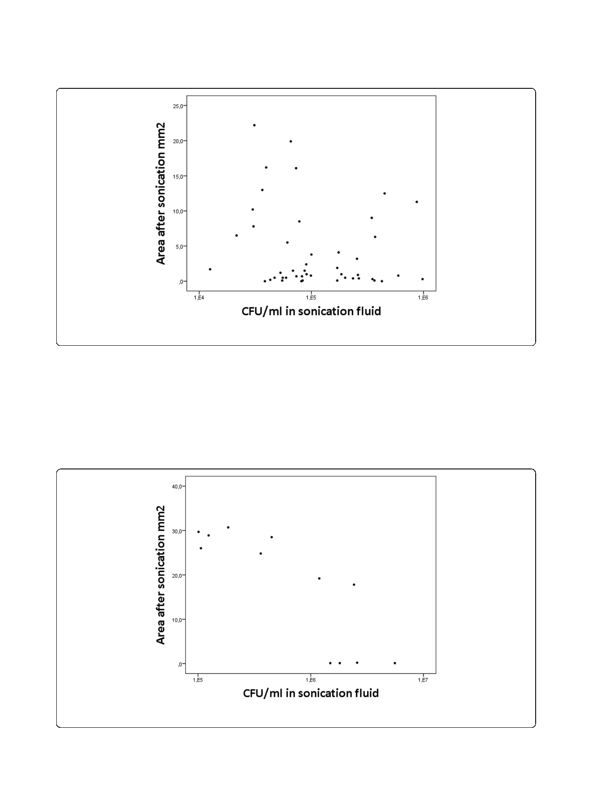

Sandbakken et al. Journal of Orthopaedic Surgery and Research (2020) 15:522
Page 7 of 9
Fig. 7 Scatter plot of 24-h biofilm. The amount of remaining bacteria after sonication (covered area) on the steel plates is plotted against the
number of CFU in the sonication fluid
specimen. Results are also limited to one S. epidermidis
strain, although this species is the most frequent patho-
gen in PJI.
Alternative methods for quantification might be
measurement of optical density from resolved biofilm
on the plates after sonication, or measurement of heat
production from dislodged biofilm by microcaloritme-
try [15, 19].
Changes solely in biofilm thickness, rather than area
covered by biofilm, would not be detected with our pro-
cedure, and it is important to emphasize that measure-
ment of area covered by biofilm does not take into
account the variable thickness of the biofilm. To better
elucidate this issue, we considered measurement of rela-
tive fluorescence instead of area covered by biofilm.
However, this involves an extensive standardization of
Fig. 8 Scatter plot of 72-h biofilm. The amount of remaining bacteria after sonication (covered area) on the steel plates is plotted against the number
of CFU in the sonication fluid